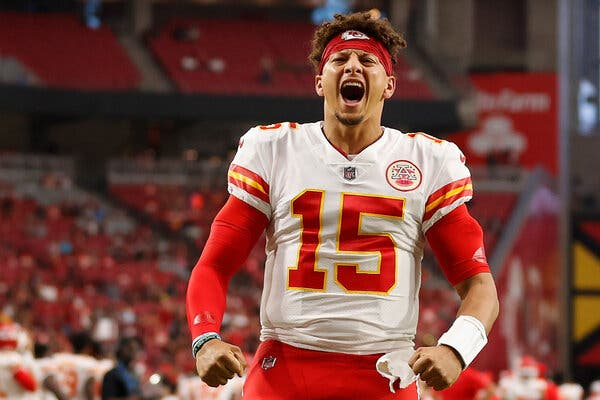

Week 4 Podcast Recap
Week 4 Recap by Trevor
10/05/2021
Quarterbacks

The most important position in sports
Winning a superbowl often requires a great quarterback, and that's what every team is trying to do. Win it all.
Therefore, in these rankings I will be logically placing Tom Brady at #1. Tom Brady has won more super bowls than any single team has in nfl history. He takes chances only when it's appropriate. He knows how to come back from behind, or drain the clock on a lead. He get's his team in position to win, with the highest win percentage of all time.
As a browns fan, I've suffered through horrendous quarterback play. I wanted it to be over when we selected Johnny Manziel. Nope. Another disaster. Then we got Baker. Our head coach was stupid and it took a Tyrod Taylor injury losing to the jets to get Baker to come in and light it up, win the game, and steal the job and then go on to set the rookie record for touchdown passes.
The next year, we hired another stupid coach and Baker regressed badly. Odell and him didn't click, and high expectations were dashed.
Then came last year, when we finally had a competent coach in Stefanski, and the hype died down. We had Hunt for a full 16 games, and a healthy OBJ. Baker got blown out in week 1 by the Steelers.
He's so hot and cold one time I told my Dad I was done, and that he's a bust, and he went out the next week and destroyed the Titans with about 5 TD's in the first half and zero incompletions the whole game except for one throw away which was a good decision. We went deep into the playoffs and lost only to the chiefs.
The Chiefs are the only team that's beaten us in our last several games dating back to last year's lost to the Ravens on primetime.
But who is Baker Mayfield? Is he the QB Browns fans have been waiting for? Is he good enough to win us the whole damn thing? Or is he not?
Tier 1 - Elite Tier
Tom Brady
Aaron Rodgers
Patrick Mahomes
Russell Wilson
Kyler Murray
Josh Allen
Lamar Jackson
Deshaun Watson

Tier 2 - Great Tier
Justin Herbert
Dak Prescott
Matthew Stafford
Joe Burrow
Tier 3 - Good Tier
Matt Ryan
Baker Mayfield
Kirk Cousins
Ryan Tannehil
Jalen Hurts
Derek Carr
Tier 4 - Potential
Trey Lance
Mac Jones
Trevor Lawrence
Justin Fields
Daniel Jones
Sam Darnold
Jimmy Garropollo
Tua Tagolavoa
Taylor Heinike
Tier 5 - Move on
Jameis Winston
Jared Goff
Carson Wentz
Ben Roethlisburger
You're happy if you have a favorite team with a guy in Tier 4. At least there is a chance they evolve into something special.
In Tier 2, you're ecstatic, because these guys are balling out and your franchise is trending upward.
Anyone with a tier 1 QB on their favorite team is spoiled rotten. All of these guys are virtually interchangable, and they are not the reason your team loses. They are the reason your team wins.
Tier 3, is the dicey one. Tier 3 is either young players who haven't convinced you yet, or veterans starting to decline. Tier 3 is where you might find a player like an Eli Manning on the Giants super bowl team. He was good enough, to win it all and make some big throws with a great defense and running game. Kirk Cousins is good enough to make a few big throws, but he's not good enough to get you to the promiseland without a seriously stacked team around him. Matt Ryan missed his window. Baker is in his window right now. I can't help but think the Browns could pull a Rams and Trade a Goff for a Stafford. Because trading Baker for Deshaun Watson makes a lot of sense if there wasn't the legal situation.
I'm going to the game this weekend. What will Baker do? Will he light it up, and outduel Justin Herbert, or will he be outgunned and outclassed? -Developer Max
10/05/2021
Week 3 Podcast Recap
Week 3 Recap by Trevor
10/05/2021
Is Fantasy Football Dead?

In chess, at the top level, in classical time control of each player getting at least 30 total minutes on their clock, most games are drawn.
Magnus Carlsen, the current world champion and highest rated player of all time, was challenged in the world championship and drew every single game and then won easily in tiebreaks when the time was switched to blitz (5 minutes per) and rapid (10 minutes per).
As time decreases, the mistakes become more likely, and players are able to find winning advantages. Magnus knew his opponent wasn't as good as him in rapid, so he chose to push for an advantage there and only there, avoiding supercomputer theory.
But for a long time, it was believed by some that chess was a dead or solved game.
Computers have been better than people since the 90's when IBM's Deep Blue defeated Garry Kasparov in a match.
Computers at that time played boring, surgical moves with superhuman precision. It was believed that chess was dead, solved. No magic left to uncover. No more strategies worth exploring, nothing could beat the computer.
The best players started emulating the best computers, and games got more and more boring.
Go, a chinese board game, was not solved, so Google solved it of course with AlphaGo, self-learning technology. The AI played itself millions of times with just the rules and score of the game and mastered it in a way no human can fully comprehend. Then, they made AlphaZero, which can play any game, including chess.
Alpha Zero dominated the top chess engine that had been using a brute force calculation. Alpha Zero played daring sacrifices, human-like, but followed it up with insane beyond superhuman ability to restrict it's opponent's pieces and win with spectacular checkmates.
Suddenly, chess was revived. Players started to learn from Alpha Zero and get great results from playing h4 early and just attacking like a schoolboy.
Chess was wide open again. Now we have Nepo vs. Carlsen scheduled. Nepo plays like how I think Sven would play, extremely dynamic and not playing to draw or playing it safe. A very double-edged attacking player.
Still, players memorize chess theory, and avoid certain lines because they know how the game will end up and don't see any winning chances there. Magnus Carlsen is famous for playing suboptimal moves he knows are suboptimal, but are the best because they get his opponent into uncharted territory where suddenly his preporation is of no use because he expected magnus to go down a superior line. So inferior play is superior in that sense, for the greatest ever.
In Fantasy Football, you have fantasy pros, which is sort of like a computer. Even I've written an article on medium last season about using deep learning to determine which backs are busts and which are set to boom.
These analysts and initial computer algorithms are getting so good that fantasy football is reminding me of what we once thought of chess... a dying game.
See, if the models are right, if fantasy pros is right, then we all pick the best player available, have equal teams, and really only injuries set us apart. But if the models are wrong, then you can get a steal like Gronk in the 13th round. The more the models are wrong, the more the game is alive in the eyes of strategists like myself.
I had a dream, probably my first fantasy football dream, the other night. I dreamt that I was watching football in my room, and I thought to myself, "nothing happened today that wasn't forecasted or predicted" Like these fantasy analysts are getting so good at their jobs increasingly so ever year, so that it's actually less fun to play. Suprising stars is what makes fantasy fun. The less suprise, the less interesting of a game it is to play. When you have all these analysts banging the drum for rondale moore, well where's the fun in picking him up? Are you just doing what you were told? Granted, in our league someone grabbed him before he blows up and I give credit to that person. But, I'm just saying, it's gotten to the point were a 6 year old girl who's never watched football could probably have an excellent team just by doing what the computer says to do. She's probably be ranked number 1 every week projected for 140+ points and get a first round bye.
I zag super hard in the other direction, and trust me, it's not because I don't want to win. I want to win, but I also want to have fun. I love listening to the Fantasy Footballers podcasts but man, in my dream, fantasy occurred to me as a solved game, a dying game. And maybe not for everyone, but for people like me. Chess is so complicated that I'm nowhere near good enough where chess being a solved game even applies to the games I play... but there are certainly some lines I'm aware of and avoid because I know that he knows what to do. Like I'm good enough to smell it. I'm top 1%. Top 1000 on lichess.org.
Chess is still beautiful. I still learn, I still have fun. But I don't play boring theory and see who can memorize it better, I play fun crazy lines usually. And in fantasy, I don't even think I'm capable of taking the best player available. Why not just autodraft? I'd rather take a player on the Browns because I like them, idk. I don't even know what I'm saying. But in chess, the solution is to reduce the time of moves, so that more mistakes happen. So maybe in fantasy, it'd be a lot more fun if we got rid of the computers on draft day and made people pick a lot faster, idk. Could create more imbalance in our league which I think is a good thing. Parity at this level is really just flipping a coin and seeing who's guy gets injured during the game. I would rather have no parity, and a clear dominant player who picked players way out of order of where they're supposed to go. Imagine a fantasy draft before computers and experts and the lack of parity in that league. Idk. Just something to consider. For what it's worth, I love fantasy football still. I think it's alive and well. It was just a dream.
Magnus Carlsen was also the #1 Ranked Fantasy Soccer player in the world for a long time and proudly donned that on his instagram. I think the ability to look at data and form a winning strategy does apply to both chess and fantasy sports or that would never happen. It's obviously not luck that Magnus was the best fantasy player in the world and also the best chess player. It's not a coincidence.
The question is, does Andrew Seif know Brandin Cooks' career. Does he know, within his own mind, that he's sneaky good this year, or did he just look at the fantasy pros best player available and read one stanza and click draft? Like does he know he used to play for the saints, was a first round pick, and gets traded all of the time? Does he know that when he makes a big play, he pantamimes pulling out a bow and arrow? Does he want to watch that celebration with a smile? Or does he just read a quick recommendation from the computer and pick him in our league? I honestly don't know. But I hope he knows who Brandin Cooks is, and actually believes in the player and situation. Does he know he was brought in to replace the terrible trade of Hopkins, to cover up Bill o Brien's mistake? Does he know who Bill o brien is? That he has a butt chin, and was the GM and Coach? How deep does Andrew's knowledge go? Does he know bill o brien was a D cordinator for Bill B and the Pats? That's where my knowledge ends. But where does seif's? And he puts up 20 on me on thursday night football. Did he deserve that? Did I deserve that? I don't know. I'm just thinking out loud, as always. Yours truly, Max.
09/23/2021
Week 1 Review
Here is Trevor's podcast for week 1
Also want to mention nice trade by Tim and Justin. I think it helps both teams.
09/16/21
Shake and Bake
Boys, week 1 is practically upon us. And once the bullets start flying, everything changes.
Suddenly, all the offseason narratives fall away, and these narratives that plague rankers throughout the industry will make you curse yourself for over-analyzing.
On Thursday night, you'll remember, Tom Brady is good at football. Rob Gronkowski is good at tight end. Antonio brown is good at receiver. Everything else is noise.
I can't wait for Odell Beckham Jr. and the Browns to take on the Chiefs in Arrowhead.
As for our fantasy league, I'm dying to see who Justin and Trevor drop, assuming they fill their lineup and fail to swing a 2 for 1 trade in the next 24 hours.
Will Chris's team live up to the hype? Will Devin's triple wide receivers pay off?
Fantasy football is just a game. Devin understands that. He won the title because he made the right moves at the right time and ended up with Justin Jefferson basically filling the hole in his roster that was Julio Jones last year. I think with the way Jamar Chase has looked, if there's a Justin Jefferson this year, he's on my team and his name is either Devonta Smith or Jaylen Waddle
This is the moment of truth. I'll never forget week 1 Leveon Bell making one of the best runs ever against the browns and I knew I made the right keeper pick. Or Tyreek hill backflipping in the endzone and I knew I got a 4th round steal. Or Metcalf last year catching a bomb on atlanta. Who will explode for your team? What studs and duds will dramatically declare themselves? I remember Alpert's draft pick of Gronk looked genius with a 3 TD performance on primetime back when Alpert was in the league and Gronk was in his prime.
Who's going to go off and be the 4th round steal like my Tyreek and Metcalf picks? Here are my picks for week 1 superstars you're gonna be kicking yourself for not drafting.
- Justin Jefferson
- Devonte WishIHadAms aka Devonte STATums
- CeeDee Lamb
- Tee Higgins
- Brandon Aiyuk
- Jerry Jeudy
- Damien Harris
- Derrick Henry
- Nick Chubb
- Kareem Hunt
- Travis Kelce
- Tyreek Hill
- Pat Mahomes
- Aaron Rodgers
- Tom Brady
- Mike Evans
- Najee Harris
- Lamar Jackson
- Justin Herbert
- Darren Waller
- James Robinson
- Antonio Gibson
- Corey Davis
Studs

Who's going to fall flat on their face and make you regret all that draft capital you spent on them? Here are my top candidates to disappoint
Before I show you, let me tell you something. You know when the weeks over and you glance at the other games in your league and see some of the pitiful performance of certain nfl players that were started in fantasy? What do they have in common. Narrative. There is always a reason. "Oh, I see why you started that guy. The other guy got hurt and he was expected to be the starter" Or, oh with so and so situation this player should benefit. Unless it's blatant absense of talent at a certain position, most duds come from narrative driven projections of something that player isn't actually good at doing. Like Irv Smith giving you zero when Kyle Rudolph isn't playing, or stuff like that. Sometimes, it does pan out, like David Montgomery without Tarik Cohen last year, but beware that narratives will cause more duds than studs in my opinion.
Without further ado, here are my picks for duds in week 1 and the season beyond
- Darrel Henderson
- Austin Eckeler
- Dallas Goedert
- Jaylen Hurts
- Noah Fant
- Kenny Golladay
- DJ Chark
- Brandon Cooks
- Michael Carter
- James Conner
- Zack Moss
- Clyde Edwards Helaire
- Keenan Allen
- Saquon Barkley
- Joe Mixon
- Chris Carson
- Matthew Stafford
Duds

Live long and prosper, -Developer Max
Draft Review
Trevor and I break it down.
08/25/21
Fantasy Podcasts

This is where I'll be posting the league content like podcasts.
I'm open to suggestions about what kind of content you guys want to put on here.
I can also post articles from guests if any of you want to email me some content.
Peace!
08/21/21
End of the Line

This is the end of the league Blog.